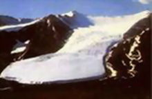
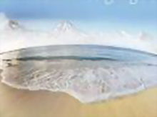
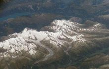

冰川地质形成的地貌
睛朗的夏天，天山和祁连山麓的居民，能清晰地看到一条黑白分明的界线横过 山腰。线以上是银光闪烁的冰雪世界。这条界线，称为雪线。确切地说，雪线 指的是某一个海拔高度；在这个高度上，每年降落的雪刚好在当年融化完。一 个地方的雪线位置不是固定不变的。季节变化就能引起雪线的升降，这种临时 现象叫做季节雪线。只有夏天雪线位置比较稳定，每年都回复到比较固定的高 度，由于这个缘故，测定雪线高度都在夏天最热月进行。就世界范围来说，雪 线是由赤道向两极降低的。珠穆朗玛峰北坡雪线高度在6000米左右，而在南北 极，雪线就降低在海平面上。雪线是冰川学上一个重要的标志，它控制着冰川 的发育和分布。只有山体高度超过该地的雪线，每年才会有多余的雪积累起来。 年深日久，才能成为永久积雪和冰川发育的地区。
粒雪盆是冰川的摇篮。聚积在粒雪盆里的雪，究竟是 怎样变成冰川冰的呢?雪花经过一系列变质作用，逐 渐变成颗粒状的粒雪。粒雪之间有很多气道，这些气 道彼此相通，因此粒雪层仿佛海绵似的疏松。有些地 方的冰川粒雪盆里的粒雪很厚，底部的粒雪在上层的 重压下发生缓慢的沉降压实和重结晶作用，粒雪相互 联结合并，减少空隙。同时表面的融水下渗，部份就 冻结起来，使粒雪的气道逐渐封闭。被包围在冰中的 空气就此成为气泡。这种冰由于含气泡较多，颜色发 白，容重约为0.82～0.84克/立方厘米，也有人把它 专门叫做粒雪冰。粒雪冰进一步受压，排出气泡，就 变成浅蓝色的冰川冰。
在河谷上源接近山顶和分水岭的地方，总是形成一个 集水漏斗的地形。当气候变冷开始发育冰川的时候， 这种靠近山顶的集水漏斗，首先为冰雪所占据。冰雪 在集水漏斗中积累到一定程度，发生流动而成冰川。 冰川对谷底及其边缘有巨大的刨蚀作用，它象木匠的 刨子和锉刀那样不断地工冰川地形,冰川地形作，原来 的集水漏斗逐渐被刨蚀成三面环山、宛如一张藤椅似的 盆地形伏。这种地形叫做冰斗。冰斗大多发育在雪线附 近的高程上。 一般山谷冰川，往往爬上冰坎，才能看到 白雪茫茫的粒雪盆。当冰川消失之后，这样的盆底就是 一个冰斗湖泊。高山上常常可以见到冰斗湖，它们有规 则地分布在某个高度上，代表着古冰川时代的雪线高度
水冻结成冰，体积要增加9%左右。当融化的冰雪 水在晚上重新在岩石裂缝里冻结时，对周围岩体 施展着强大的侧压力，压力最大可达2吨/平方厘 米。在这样强大的冻胀力面前不少岩石都破裂了。 寒冻风化作用不仅在山坡裸露的地方进行，在冰 川底床也能进行。这是因为冰川底床有暂时的压 力融水，融水渗入谷底岩石裂缝里，冻结时也产 生强大的冻胀力。寒冻风化作用不停地在山坡上 和冰川底床制造松散的岩块碎屑，山坡上的碎屑 在重力作用下滚落到冰川上，底床里的碎屑更容 易被冰川挟带着一起流动。冰川挟带的碎石岩块 通称为冰碛
粒雪盆中的粒雪和冰层大致保持平整，层层迭置。每一年积累下来的冰层， 在冰川学上叫做年层。年层是怎样划分开的呢?原来冬季积雪经夏季消融后， 形成一个消融面，消融面上污化物较多，所以也叫做污化面。污化面是划分 年层的天然标志。 有了年层，冰层就能像树轮一样被测出年龄来。由于冰川 在形成的时候封存了一些空气和尘埃，冰川学家能够从中提取气泡和尘埃分 析当时的气候